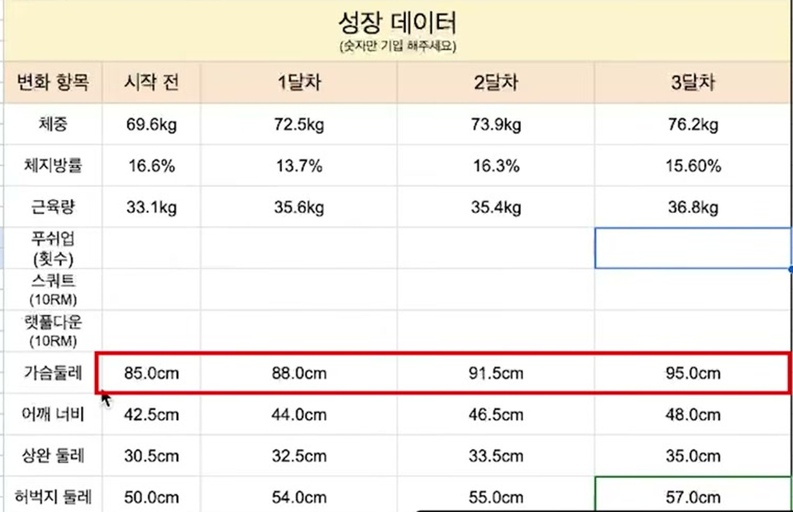
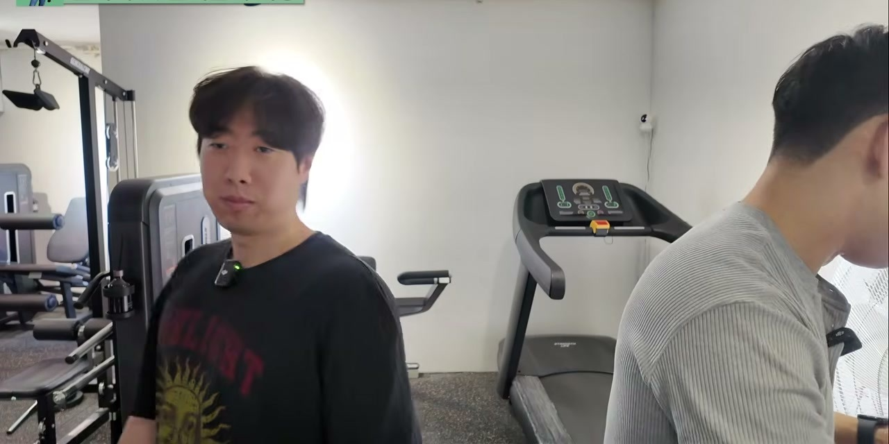

@bulk_farmer · 01
2년 동안
안 변하던 몸이
12주 만에
실제 수강생의 12주 기록입니다.
인바디와 줄자로 전부 측정했습니다.
숫자로 확인하세요 →
@bulk_farmer · 02
열심히 안 한 게
아니었습니다
“넌 원래 마른 체질이야
아무리 해도 안 돼”
2년 넘게 헬스장을 다녔습니다.
빠진 날도 없었습니다.
루틴도 바꿔봤고 식단도 신경 썼습니다.
그런데 체중계 숫자는 움직이지 않았습니다.
12주 후, 인바디
체중
69.6kg
→
76.2kg
골격근량
33.1kg
→
36.8kg
체지방률
16.6%
→
15.6%
개인에 따라 결과가 다를 수 있습니다
줄자는 더 정직했습니다
가슴둘레
85cm
→
95cm
어깨너비
42.5cm
→
48cm
팔둘레
30.5cm
→
35cm
허벅지둘레
50cm
→
57cm
개인에 따라 결과가 다를 수 있습니다
기록은 매달 남겼습니다

시작 전 · 1달차 · 2달차 · 3달차
매달 같은 항목을 같은 방식으로 측정했습니다.
실제 코칭 기록 화면
줄자로 직접 쟀습니다

체중계 숫자만으로는 알 수 없습니다.
어디가 얼마나 커졌는지가 중요합니다.
12주차 최종 측정
@bulk_farmer · 07
여기서 가장 중요한 건
체중이 6.6kg 늘었다는 게 아닙니다.
체중은 늘었는데
체지방률은 오히려
내려갔습니다
그냥 많이 먹어서 찌운 게 아니라는 뜻입니다.
늘어난 무게의 상당 부분이 근육이었습니다.
벌크업이 실패하는
가장 큰 이유는
지속성
입니다
12주 동안 식중독도 걸렸고
병원에 간 날도 있었습니다.
그래도 다시 시작했습니다.
방법을 몰라서 실패하는 게 아닙니다.
혼자 계속하기가 어려운 겁니다.
@bulk_farmer · 09
2년이 안 바뀌었다면
방법이 아니라
방향
일 수 있습니다
1:1 벌크업 코칭 문의
프로필 링크를 확인해주세요
@bulk_farmer
본 사례는 개인의 결과이며 개인에 따라 결과가 다를 수 있습니다